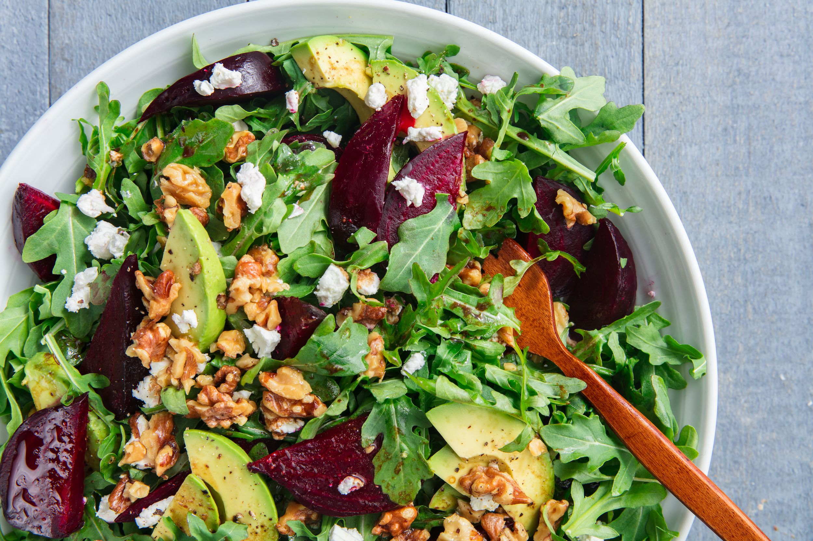

Goat cheese/Beetroot salad
Goat cheese/Beetroot salad

Ingredients
Lettuce/ Any leafy salad base you like |
Beetroot (cut into slices) |
Goats Cheese (cut into slices) |
Walnuts (Crush up abit) |
Balsamic Dressing (you can also make your own if you know how lol) |
Method
1.) Put lettuce/ leafy salad on a plate |
2.) Add beetroot and goats cheese on the top |
3.)Sprinkle crushed walnuts on top |
4.)Drizzle balsamic dressing over |